打算用C/C++把基本的数据结构与算法实现一遍, 为考研做准备, 因为只是想实现算法和数据结构, 就不太想用VisualStudio, 感觉VSCode不错, 遂在网上找了一些教程, 结合自己的需求, 配置一下开发环境.
CMake
CMake是一个跨平台的自动化建构系统,它使用一个名为 CMakeLists.txt 的文件来描述构建过程;
官网下载安装, 傻瓜式操作;
记得把安装目录下的bin文件添加到系统环境变量, 这个可以在安装的时候勾选, 勾选了就不用自己添加了;
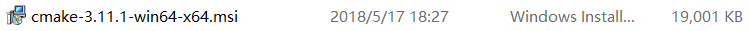
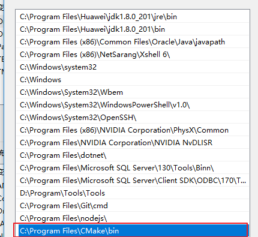
检测是否安装成功:
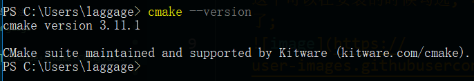
MinGW
MinGW即Minimalist GNU For Windows，是将GNU开发工具移植到Win32平台下的产物，是一套Windows上的GNU工具集。简单说，MinGW是一个编译环境; 相当于linux下的GCC;
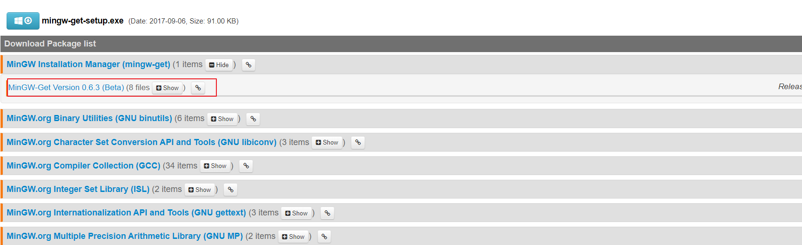
安装好将安装目录下的bin文件夹的路径添加到环境变量:
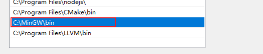
Clang
类似GCC的编译器, 它的目标是干死GCC(网上看到别人这么说的).
维基百科:
Clang（发音为/ˈklæŋ/类似英文单字clang[1]） 是一个C、C++、Objective-C和Objective-C++编程语言的编译器前端。它采用了LLVM作为其后端，而且由LLVM2.6开始，一起发布新版本。它的目标是提供一个GNU编译器套装（GCC）的替代品，支持了GNU编译器大多数的编译设置以及非官方语言的扩展。作者是克里斯·拉特纳（Chris Lattner），在苹果公司的赞助支持下进行开发，而源代码许可是使用类BSD的伊利诺伊大学厄巴纳-香槟分校开源码许可。
VSCode中可以用它来提供智能提示;
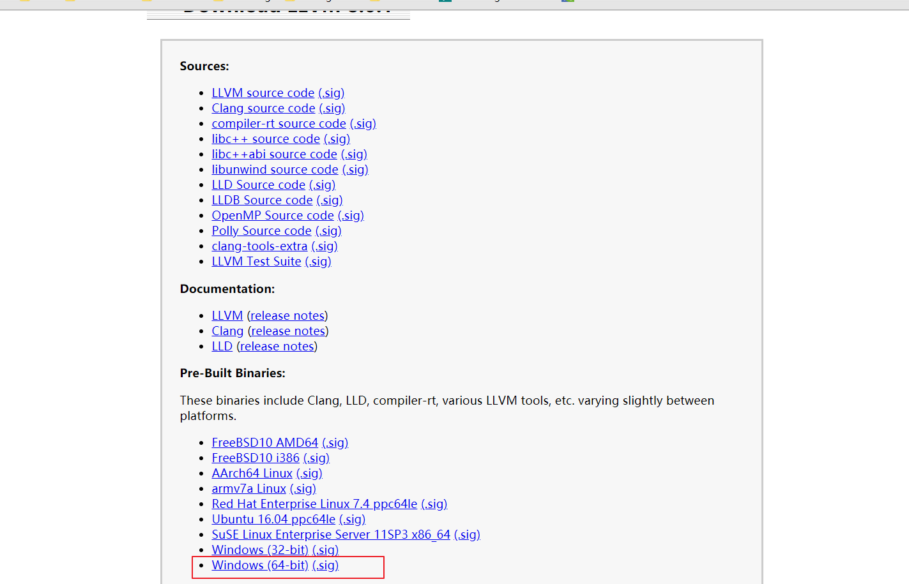
傻瓜式安装, 安装好把安装目录下的bin文件夹的路径添加到环境变量;
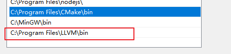
如图, 安装好图中的插件:
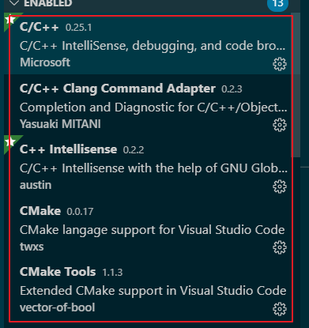
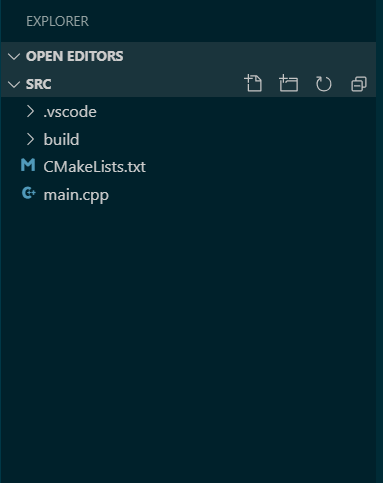
#include <iostream>
using namespace std;
int main(int argc, char* argv[])
{
int a = 89;
int b = a++;
char buf[10] ;
cout << "a = " << a << endl;
cout << "b = " << b << endl;
cout << "Hello...";
cin.get(); //防止闪屏
return 0;
}cmake_minimum_required(VERSION 3.11)
project(VSCode_Cpp_CMake)
# 代码路径
aux_source_directory(. DIR_TOOT_SRCS)
# debug 模式
set (CMAKE_CXX_FLAGS "${CMAKE_CXX_FLAGS} -g")
# 生成可执行的文件
add_executable(VSCode_Cpp_CMake ${DIR_TOOT_SRCS})键盘按下: ctrl+shift+p
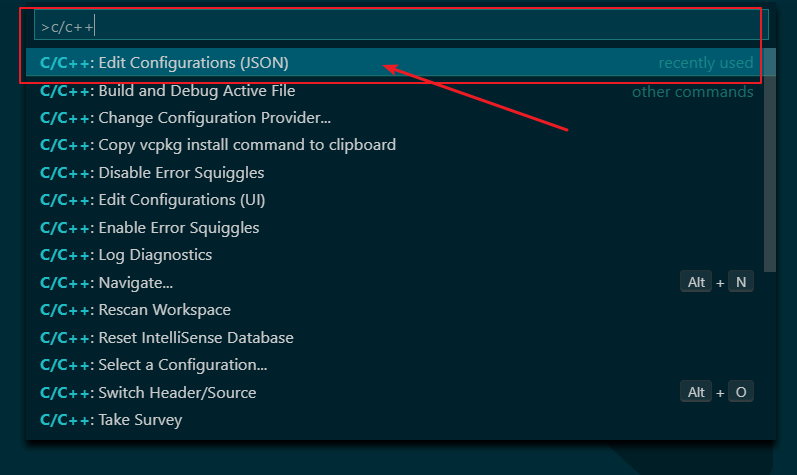
{
"configurations": [
{
"name": "CMake",
"includePath": [
"${workspaceFolder}/**"
],
"defines": [
"_DEBUG",
"UNICODE",
"_UNICODE"
],
"windowsSdkVersion": "10.0.18362.0",
"compilerPath": "C:/MinGW/bin/g++.exe", // 根据自己的安装目录确定
"cStandard": "c11",
"cppStandard": "c++17",
"intelliSenseMode": "clang-x64", // 注意修改, 提供智能提示
"configurationProvider": "vector-of-bool.cmake-tools"
}
],
"version": 4
}按快捷键: ctrl+shift+p
按下图操作:
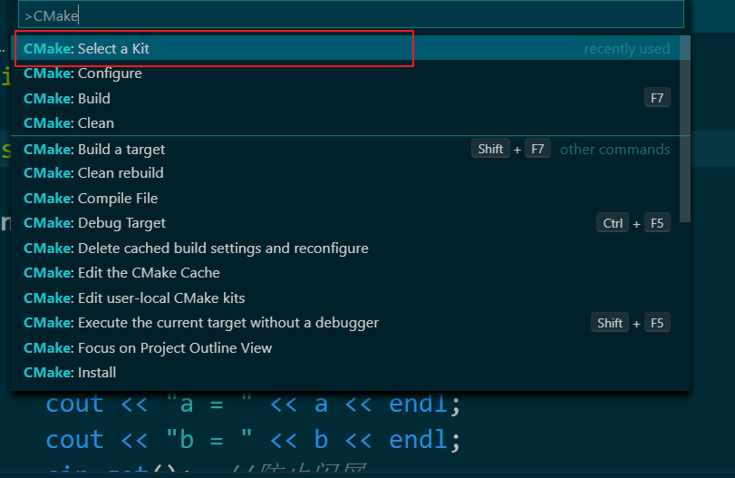
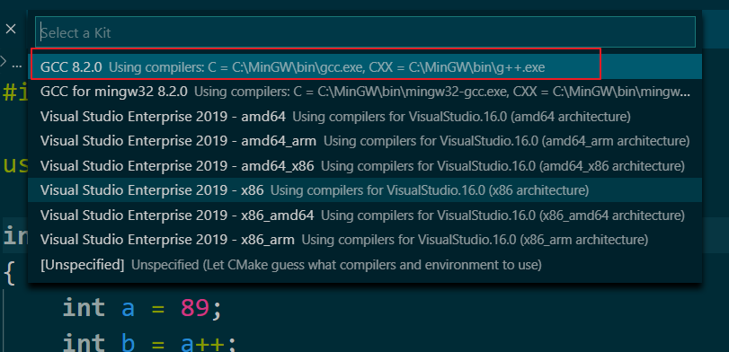
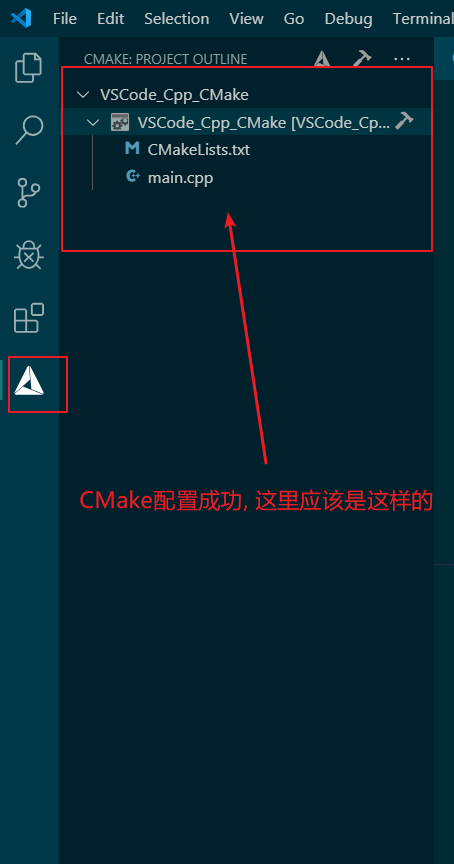
这里操作好就可以进行编译生成exe文件了:
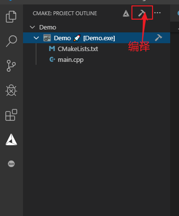
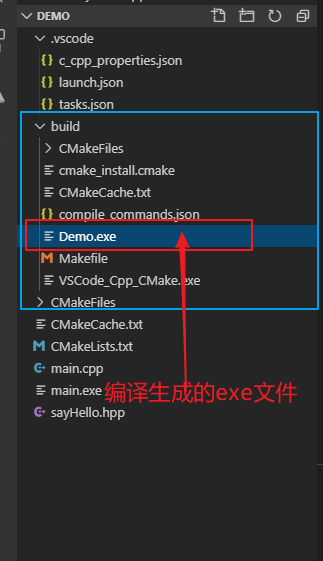
使用gdb进行调试.
快捷键: F5 -> C++ (GDB/LLDB) -> g++.exe build and debug actvive file
vscode 会自动生成一个默认的 launch.json 和 task.json
编辑launch.json和task.json, 注意加了注释的地方都是要修改的;
task.json
{
"tasks": [
{
"type": "shell",
"label": "cmake build active file", // 任务名称
"command": "cmake --build ${workspaceFolder}\\build --config Debug --target all -- -j 10", // cmake指令
"args": [
], // 指令参数
"options": {
"cwd": "C:/MinGW/bin"
}
}
],
"version": "2.0.0"
}launch.json
{
// Use IntelliSense to learn about possible attributes.
// Hover to view descriptions of existing attributes.
// For more information, visit: https://go.microsoft.com/fwlink/?linkid=830387
"version": "0.2.0",
"configurations": [
{
"name": "(gdb) Launch", // default: g++.exe build and debug active file
"type": "cppdbg",
"request": "launch",
"program": "${workspaceFolder}\\build\\Demo.exe", // 可执行文件所在的路径, Demo= 替换成自己的项
"args": [],
"stopAtEntry": false,
"cwd": "${workspaceFolder}",
"environment": [],
"externalConsole": true, // 显示独立控制台窗口
"MIMode": "gdb",
"miDebuggerPath": "C:\\MinGW\\bin\\gdb.exe",
"setupCommands": [
{
"description": "Enable pretty-printing for gdb",
"text": "-enable-pretty-printing",
"ignoreFailures": true
}
],
"preLaunchTask": "cmake build active file" // 执行cmake编译任务, 再task.json中定义的
}
]
}编译 快捷键: F7
调试 快捷键: F5